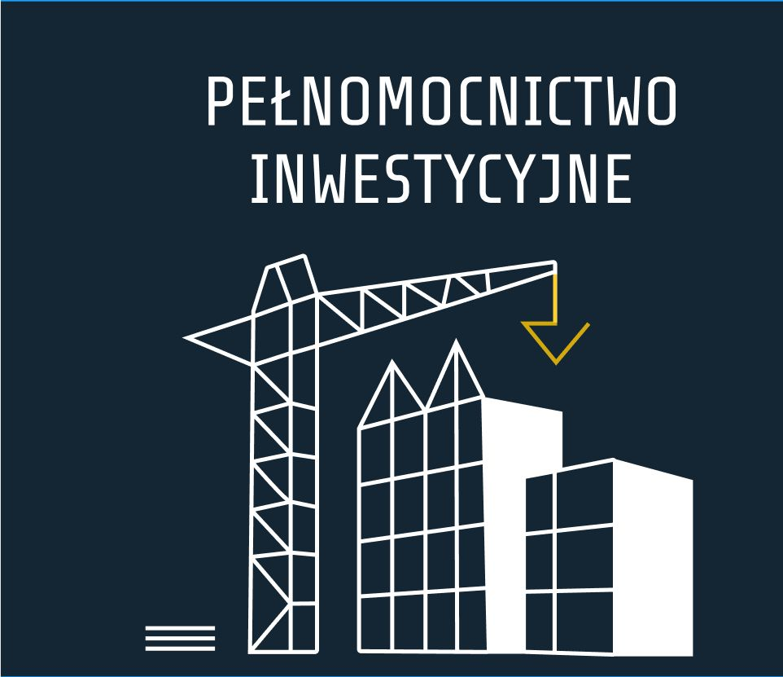
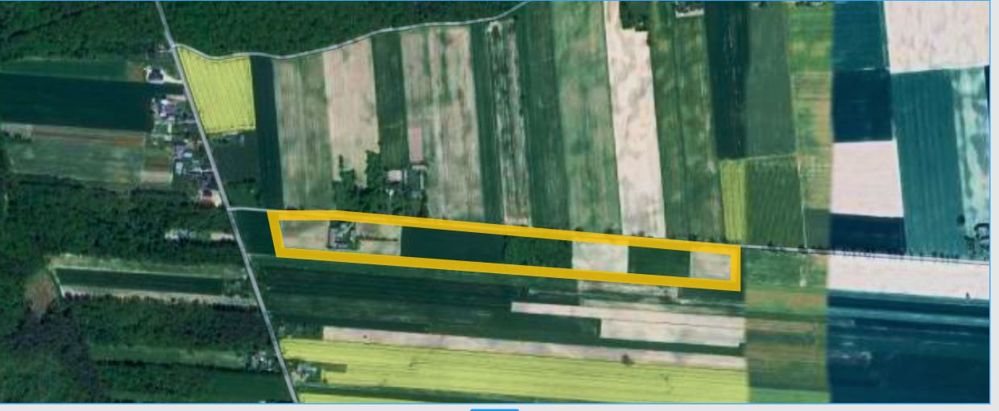

POMAGAMY
WYKONAĆ TWÓJ PLAN

- Czy wiesz, że nawet 35% działek będących na rynku nieruchomości pozbawionych jest prawa zabudowy. Nie kupuj kota w worku. Sprawdź zanim podpiszesz umowę.
- Kompleksowa weryfikacja nieruchomości przed zakupem.
- Uzyskiwanie dokumentacji adminstracyjno-budowlanych w tym decyzji o ustaleniu warunków zabudowy, zaświadczeń planistycznych, drogowych,
opinii podziałowych i innych niezbędnych do rozpoczęcia porocesów budowlanych.
- Reprezentowanie przed urzędami, ochrona przed zbędną biurokracją, pomoc w wypełnieniu wniosków.
- Nawet niewielkie inwestycje jak budowa schodów, zadaszenia czy postawienie altany wiążą się
ze skomplikowaną procedurą administracyjno-budowlaną. Nie decyduj się na samowolę budowlaną. Buduj z głową.
- Pełnomocnictwo podczas uzyskiwania stosownych decyzji, zgłoszeń oraz zaświadczeń architektoniczno-budowlanych niezbędnych przed rozpoczęciem budowy.
- Przygotowanie nieruchomości pod inwestycje.
- Uzyskiwanie dokumentów niezbędnych do sprzedaży nieruchomości- wymaganych przez notariusza.
PROFESJONALNE
DORADZTWO
SKUTECZNE
DZIAŁANIE
OSZCZĘDNOŚĆ
CZASU
KONTAKT:
608584422
biuro@pi.pl
facebook